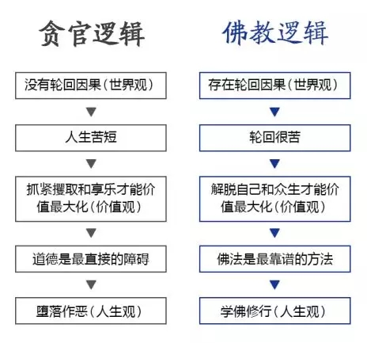

一、你可能信了一个假佛
学佛，其实是一件很有逻辑的事。关于为什么要学佛的问题，回答五花八门，千奇百怪。
有的说自己身体不好，听说佛能治病（她的意思是起死回生，因为她得了绝症）；有的说听说佛很厉害，而自己正处于人生关键时刻（意思是保佑他升官发财）；有的说刚去了一个寺院喝茶，感受到久违的平安喜乐（因为该寺院在仙气十足的风景区）；有的说看了一句佛语觉得很有感悟（其实是网友编的心灵鸡汤）。
简单地归类，排名最靠前的学佛动机有两大类：
1、满足实际需求（如治病，升官发财等）；
2、获得心灵按摩（如缓解压力、享受禅意等）；
但当他们短期内没有满足需求，或是遇到其他心灵替代品，他们可能就会果断离开。
有位想治病的女孩，听说放生可以健康长寿，于是风雨无阻地坐着轮椅来参加放生，但坚持一段时间后病情没有好转，就再也不来了。
有位想发财的大叔，听说供养可以获得福报，于是不时地供养一些财物，但之后生意越来越差，就再没出现了。
有位平安喜乐的大妈，云游了各地名寺古刹，到处吃斋、品茶、谈禅、打坐后，发现寺院看多了早已审美疲劳，个别僧人张口要钱吃相难看，对佛教美好想象碎了一地，于是不再学佛。
有位感悟鸡汤的大学生，看了几本佛经后，发现算命看相带给他更多感悟，于是不再念佛，见到美女就紧攥玉手为其看手相，并反复抚摸，细致指点。
有位想静静的男生，到庙里“静”了几天，每日独对佛像泪流满面，似已顿悟佛家苦空无常之理。回家后偶遇一美女，月余，忽成夫妻，从此闭口不提佛法。
他们都在“学佛”，但他们都没搞清楚佛教到底要解决众生的什么问题，换句话说，他们都不具备学佛的正确动机。如果没有正确的动机，无论开始学佛有多热闹，最终都会离开或跑偏。
而正确的动机，是建立在正确的逻辑和世界观的基础上。我们常说“三观尽毁”之类的话，也知道“三观”是指世界观，价值观和人生观。
一个人一定是先有了世界观，认为世界是这么运行的，然后才建立相应的价值观，即如何评判对错和好坏。最后基于价值判断，建立一套人生观，即人生该怎样度过。这三观之间有着一定的因果递进的逻辑关系。让我们用典型的世俗代表——贪官的大逻辑，和佛教逻辑做一个对比。

从以上的分析中，你会惊奇地发现，世俗和佛教虽然看起来截然不同，但追根究底深入它们的根本逻辑，同样都非常理性，甚至逻辑过程都很相似，本质上都是想“离苦得乐”。唯一的不同是它们所基于的世界观不同——佛教认为有轮回，而世俗认为没有。从这里，你可以清楚地看出世界观是如何的重要，一个人是怎样从他/她的世界观出发，经由一套逻辑，演进出了最终的行为选择。我们不要笑话“贪官”们，其实他们的逻辑很清晰，观念也很实用。从某种意义上，我们每个人都是“贪官”，因为凡夫都会不同程度地拥有类似的欲望。
一个经常痛斥贪官可恶的普通人，如果自己有一天也坐上同样的高位，面对同样的诱惑，大概率事件是他也会成为贪官——原因很简单，因为他和贪官拥有同样的大逻辑和世界观。而一个正信的佛教徒即便在政府工作，也绝不敢收取贿赂，主要不是害怕被双规，而是怕因果，怕下地狱。
很多人在面对为什么不信佛时，通常都会回答：我想要自由一些。
他的潜台词是，信佛后自由将受到限制。比如有很多清规戒律，他希望任性地生活而不被约束。再往深处探究，他的陈述背后还有一个隐含的世界观：佛教的因果并不存在，即使我任性而为，也不会有“恶报”；而即使持戒行善，也不会有“善报”。
这其实很理性，如果轮回和因果不存在，一个聪明人为什么要牺牲自由去遵守那些清规戒律？
向内求，不信佛的根源不在于自由，而在于世界观。每个人都想要最大限度的自由，但如果不了解世界运行的真正规律，就不可能获得真正的自由。好比一个人不懂得法律法规，公司规定，人情世故等等，他在世间随心所欲“自由”地驰骋，一定会碰得头破血流，搞不好进监狱了。
一个人只有顺应天道，才能真正自由。
我们是由于业力堕落在轮回中的凡夫，这是佛教世界观所描述的真相。而令自他脱离轮回之苦，才是我们学佛的正确动机。
如果不相信轮回的存在并决心出离，抄经也不是学佛，只是练字而已。
如果不相信轮回的存在并决心出离，打坐也不是学佛，只是静静而已。
如果不相信轮回的存在并决心出离，吃素也不是学佛，只是减肥而已。
轮回存在与否——是佛教大逻辑成立与否的关键，也是选择学佛与否的决定性因素。
二、选择信仰的思维误区
从方法论的角度来说，大多数人对待信仰的毛病都是一样的，无论是信基督教、佛教还是“科学教”：
毛病A——事实样本太少
毛病B——逻辑推理错误
这种要命的“不完全归纳”加“神逻辑”遍地都是。
比如：
某基督徒说，我从信主后病好了，也找到了平安和喜乐，所以神真的存在。
首先恭喜你生活幸福，但你怎知道佛教徒或无神论者就治不好病，就没有平安喜乐？（样本太少）。
再说你病好了，喜乐了就能说明基督教是唯一真理，世界是神创造的吗？（逻辑错误）。
很多基督徒都大量运用这种“循环论证”，即：预设上帝存在，所以信主后会平安喜乐；因为平安喜乐，所以上帝就是存在。
这和冯小刚《十问崔永元》里的一个逻辑错误很类似：预设崔永元碰瓷，所以崔没有起诉法律；因为崔没有起诉法律，所以崔就是碰瓷。
再比如：某佛教徒说，我从来不信科学的那些东西，科学都是凡夫的分别意识所成，完全不靠谱。
你上来就贬低科学家，你看过人家的研究报告吗？（不研究样本）。
“分别意识”的思维结果就一定不靠谱吗？佛教什么时候说过“有为法”层面不能用分别意识推理分析？（逻辑错误）
再比如：某无神论者说，人根本没有前世，否则我为什么记不起来？
你记不起来前世不代表没人能记起来，其实“前世记忆”案例有不少（样本太少）。
你的假设前提是“记不起来的就是没有”，那你不记得婴儿期的事就代表你没吃过妈妈的奶了？（逻辑错误）。
所以，无论信不信，或信什么，人类的愚蠢本质上都一样，都是用“极其有限的样本”加上“漏洞百出的逻辑”得出了错误的结论，并自以为是，死不悔改！
每个人都觉得自己最科学，最正确，但真正肯下手广泛积累事实样本，并用逻辑把问题分析清楚地的人，很少。反倒是见过几个佛教大德，乍一看又念经又拜佛的，完全是“封建迷信代言人”，结果几番深谈下来，发现逻辑严谨，思路清晰，见识广博，心灵开放，实在令人叹服。他们只是没去搞科研，真去做科研都是一流的人才，因为他们对“方法论”都很重视。
三、信仰PK到底哪家强？
世界上有无数的宗教、信仰、学说等等，令人眼花缭乱，但其实按照本质来归类，主流的也就是三大阵营：
东方宗教：以佛教为代表，包括道教等，不认为宇宙是上帝创造的，相信有轮回，解脱主要“靠修行”（印度教的情况较复杂，暂且归为东方宗教）。
西方宗教：以基督教为代表，包括伊斯兰教、犹太教等亚伯拉罕信仰，认为有创造宇宙的唯一真神，认为没有轮回，解脱主要“靠救赎”。
无神论：认为没有任何超自然的神灵，也没有前生后世，信仰和修行都是“然并卵”，解脱根本“靠不上”。
那么这三大阵营到底哪个更站得住脚呢？
我们说，最高的真理必然有一个特点，即可以圆满解释所有的客观事实。
事实上，无论是宏观世界（如地球历史）、微观世界（如量子力学）、轮回案例（如前世记忆）还是神通异相（如预测未来），在目前世界上的主要宗教学说中（包括唯物主义和无神论），只有东方宗教特别是佛教能够圆满解释所有这些事实样本，而其自身也没有无法自圆其说的致命逻辑问题。换句话说，佛教最能够经受“两个根本”——事实和逻辑的检验。而所有其他宗教，包括无神论等学说，要么解释不了轮回前世等案例，要么达不到揭示物质“本空”的深度，要么与现代科学实验结果严重矛盾，要么逻辑硬伤太多，要么只是一种学说根本无从验证。
唯物主义无神论者看似不迷信，其实也在“信”。他们并没有一套终极理论，基本是用“不完全归纳法”不断总结一些并不完善的规律，一会儿信这个理论，一会儿又变为信另一套理论。用“两个根本”来检验，你会发现这些理论无法解释很多如前世记忆之类的事实样本，而且其辩护逻辑都很弱智，比如：“为什么我没看到过”？
以轮回为例，如果在过去二十年中，你业余时间都在打麻将、玩游戏、谈恋爱，你凭什么就会“看到”轮回？难道能记起前世的人会主动上门来麻将房向你诉说前世情缘？或是高僧会主动下山来游戏厅向你展示禅定成果？你何不干脆把问题换成：“为什么我从不上课从不学习结果考了零分”？
很多人认为科学发展到今天，人类的认识水平比“迷信的古人”高明多了。其实太阳底下没有新鲜事，今天人类的很多流行观点，如唯物主义、无神论、享乐主义等等，几千年前就不乏信奉者。
比如古印度的“顺世外道”（Charvaka）就秉持非常类似唯物主义的观点，而这些观点在古印度的思想大辩论中并不占上风，甚至可以说被很多智者驳得体无完肤。但两千多年过去，吃瓜群众从历史的垃圾堆中再次捡起干瘪发霉的西瓜皮，竟然如获至宝，啃得津津有味，并奉为人生真谛。
如果一个理论逻辑上本身有明显漏洞，而又无法解释客观事实，那么是否掌握了真理就值得疑问了。当然很多无神论者会反驳说，你那些案例都是假的。理论上当然存在这种可能，但你真的研究过这些案例吗？那么草率地得出结论，你的科学精神在哪里？要想提高“归纳法”的准确率，最关键的就是尽量扩大有效样本数量。当你知道世界上存在着一些和普通认知不同的关键样本时，作为一个有科学精神的人，一定不会去忽略它们的存在，而是必须搞清楚，因为很可能一个关键样本，就会推翻你之前几十年所有的结论。
一个世纪前，“美国心理学之父” William James 说过一句名言：理解正常现象的最好方法就是研究异常现象。
要选择信仰，真正的“武功密笈”在于心法——“开放的心灵，理性的思维”。要扩大有效样本数量，具有开放的心态是很关键的。否则自己会对特殊样本视而不见，而且特殊样本也会绕着你走。
在国外一个大学附属医院（University Hospital）召开过一次关于濒死经验的学术会议，有超过300人参加。会议接近尾声的时候，一个人站起来大声说：“我是一个心脏病医生，从医25年了，我从来就没听说过什么濒死体验。人都死了还能有什么感觉？太他妈荒唐了，我一个字也不信”。
结果当场就有另一个人站起来说：“我就是你治疗过的病人之一，我在被抢救的过程中有过濒死经验，但是我告诉谁都不会告诉你”。这个病人很了解这个医生的性格，说出来医生不但不会信，还会批评和嘲笑他，谁愿意自取其辱呢？
四、为什么选择佛教
关于世界上为什么有那么多宗教、邪教、旁门左道、信仰学说，有两部佛经比较多地涉及到这些问题，一部是《梵网六十二见经》，另一部是《楞严经》。内容很多，这里就不展开了，大家以后可以去学习。基督教对其他宗教学说的评价比较简单，只要别人不信基督就被“一票否决”，打入魔鬼之列。佛教对其他宗教的判断则显得比较“科学”，主要是看见解、发心和修行方式。
一个美国媒体人问一位海外的佛教大师，怎样看待基督教？大师说：在佛教看来，肯为别人牺牲的人，都是菩萨。在基督教里，一样有菩萨。
这就是佛教，既会理性分析每一种宗教的见解，又会承认每一种宗教的价值。
不同宗教的信徒之间真有那么大的鸿沟吗？
其实特雷莎修女的行为可能比大多佛教徒都更接近真实的菩萨，而某些高僧的见解可能比大多基督徒都更接近真实的耶稣。
佛教认为人的结果固然和信仰有关，但主要还是善恶决定的。
如果你是一个无神论者，你不必非要信教，但必须秉承真正的科学精神，不断扩大有效样本，用开放的心灵去审视世界。
如果你是一个基督徒，你不必非要退教，但必须理性对待“因信称义”，仍须多行善事，不要轻易诋毁别的宗教。
如果你是一个佛教徒，你不必沾沾自喜，仍须深入研习佛法，并真正实践菩萨的精神——慈悲和智慧。
与基督教的“信则得救”相比，佛教修行更像是一场科学实验。而事实上，无论信什么，每个人的一生也都在做实验。对每个宗教或学说的终极结论，只有按照其方法深入实践很多年，甚至直到死后，待“实验结束”才能完全了知。然而一生太短，最多只够一次完整的实验。对大多数人来说，做了这个实验就做不了那个。所以在正式开始实验之前，进行初步筛选和排除至关重要。
五、对佛教的常见误解
佛教≠信仰
有些人认为：佛教是一种信仰。信仰就是信心，信心当然是佛教不可或缺的要素之一，但若因此而界定佛教就是信仰的话，则又不免失之于过分简单。
佛教≠哲学
哲学有西洋哲学、东方哲学等不同的类别，虽说其中的某些思想与佛教相似，但任何哲理剖析出来的深度，都无法迄及佛法的层次。所以，佛教也不等同于哲学。
佛教≠科学
虽然佛教中的某些观点与科学相同，但也不能就此将两者画上等号。
佛教≠唯心主义
很多人认为，宗教是唯心主义，但这是针对西方宗教而言的。多数西方哲学家都是唯心主义者，故而他们也将西方的宗教归入唯心主义的范畴。然而，佛教的思想与唯心主义是全然不同的，所以佛教也不是唯心主义。
佛教≠宗教
宗教这个词是从西方传来的，如果从宗教的英文religion本身的涵义来解释的话，佛教也不能算是宗教。因为religion的字义中含有承认上帝存在的意思。西方有些人不认为佛教是宗教，是因为佛教不承认造物主的存在。过去佛教的一些高僧大德也持有相同的看法，他们认为佛教不是宗教。
六、佛教究竟是什么
佛教=佛学
佛教的真实含义就是佛学，佛教实际上就是释迦牟尼佛所传下来的学科。或者可以说，佛学是让凡夫通过修学以达到佛的境界的一种方法。因此，佛教就是佛学。
佛教=教法+证法
按照无垢光尊者的观点，教法分为因法与果法，因法是指十二部经典，果法是指密宗的一切续部，包括事部、行部、瑜伽部等。证法是指凡夫相续中的信心、恭敬心、大悲心、空性正见，乃至凡夫以上五道十地的所有境界。
烧香、磕头、念经、放生虽然也是佛教的一部分，但不是最主要的内容。佛法的根本是教法和证法，教证这两个字代表了整个佛法。
佛教=智+悲
所有的佛教，包括大乘、小乘，显宗、密宗的内容，都可归纳于智悲当中。智悲双运，是整个佛教的精华所在。修行就是要修智悲双运，所谓学佛也就是学习佛的智慧与大悲心。
七、进一步认识佛教
顶级科学家、全国政协委员、香港理工大学校长潘宗光表示：“佛教完全不是迷信。很多影视作品里面的角色，一旦看不开就出家当和尚、做尼姑，让人们以为佛教是避世的、消极的宗教。看见很多婆婆拜观音菩萨求福及借库，就认为佛教是迷信的宗教，其实那些只是附会于佛教的民间习俗，并不代表佛法，甚至应该说和佛法无关的。通过多年来的学佛，我深刻体会到，佛教不是一种单纯的信仰，而是一门真正的科学。佛是觉悟了的人，他不是造物主，也不是主宰万物的神，他是众生最优秀的导师”。
中国科学院院士、着名化学家、自然科学家朱清时，明确指出：佛教不是迷信！
科学认识真理的方法——科学要求存在客观实体，不论谁去观察，用什么方法去观察，结果都应该相同。如果如果你做了个结论，但是别人不能重复，那你的结论就不会被认可。
佛学认识真理的方法——佛学的方法不做实验，不作推理。佛学通过提高人的认知能力来认识更深刻的真理。
什么叫提高认知能力？打个比方：一个小孩儿对世界的理解，对于我们成人来说很幼稚。这个小孩儿要提高认知能力，要等他长大。长大以后，他的大脑已经达到更高的水平了，他就会发现他小时候不能理解的许多道理豁然开朗。这就是提高认知能力来认知真理，就是人靠自然成长，从小孩儿变成大人。
人们往往不知道佛学与科学的差别，就用科学的方法来验证佛学，结果发现佛学的东西是不可重复的，然后就否定了佛学。
但实际上，不可重复对佛学而言太自然了，一个高僧大德所认识到的真理，跟一个凡夫俗子所认识到的真理，必然是不一样的。
所以，用自然科学的方法来研究佛学，只能把“微妙精深”的佛法庸俗化，既不能为佛法增辉，也不能给科学添彩。
八、他们对佛教的看法
梁启超：佛学广矣，大矣，深矣，微矣，切于人事，证于实用，实天地间最高尚圆满，深地着名之学说也。佛教之信仰，乃智信而非迷信。
鲁迅：释迦牟尼真是大哲，我平常对人生有许多难以解答的问题，他居然早已明白的启示了。
武侠作家金庸：我经过长期的思索、查考、质疑、继续研学等等过程之后，终于诚心诚意、全心全意的接受。佛法解决了我心中的大疑问，我内心充满喜悦，欢喜不尽——原来如此，终于明白了！
德国着名的哲学家尼采说：佛教是历史上唯一真正实证的宗教，它视善良和慈悲促进健康，不可以仇止仇。
英国的鲍罗登博士也说：佛教为今日人类之救星！
科学巨匠爱因斯坦：如果将来有一个能代替科学的话，那么唯一的就是佛教。
美国密苏里大学的科学家：佛教咒语具有超级神奇力量，气血调和、百病消除，经常念诵咒语从健身方面说，是防病、治病、延年益寿的功法。
北京大学宗教研究院名誉院子、哲学系教授楼宇烈：佛教因果不是迷信！有什么样的因，就肯定结什么样的果，所以佛教因果很自然。
中国现代科学家尤智表：佛教不仅不是迷信，而且是破除迷信最彻底的学理，科学造诣愈深者，愈能解释佛经中素不能解的真义。
着名物理学家北大教授黄念祖：佛教是宗教而超宗教，是哲学而超哲学，是科学而超科学。
九、学习佛法的好处
学佛最大的优点是什么？就是对生老病死有所准备，一旦出现疾病、死亡，不会觉得特别不幸，反而有勇气从容面对。不学佛的人不是这样，一旦出现天灾人祸，或者遇到生老病死的痛苦，就会抱怨命运不公，自己实在太倒霉了。对他们而言，平时几乎很少考虑：“我病了怎么办？死了怎么办”？即使偶尔考虑一下，也只是给自己买一份保险。其实这些并不保险，医疗保险不能保证你不生病，养老保险不能保证你不衰老，保险公司再怎么厉害，也解决不了你的生死大事。一个人只有学了佛，面对这些才会轻而易举、游刃有余：快乐时突然出现痛苦了，这没什么，苦乐本就是无常的；健康时突然出现疾病了，这也很正常，轮回的本性就是生老病死；亲朋好友忽然离去了，这就是聚际必散的规律。可见，佛教对于人生种种，有着不同于常人的认识。
学佛后，你会发现一种莫名的欢喜在心里冉冉升起，真的不可思议。
十、劝学佛法
世间万物的生命，从开始，到结束，从慢慢堆积，到最后的幻灭，没有什么会是永恒。即使过程再长，再美好，结束，却不过就是一瞬。就是生命，一切皆无常。
年复一年、月复一月、日复一日，时间一秒也不驻留地飞逝，此生就如此一时一刻不停顿地耗尽了，然后，我们便一命归阴。四季仍持续着，但是你的生命不待，消殒而去。看着日日、月月、年年的时光荏苒而去，一步步逼近死亡，你难道不会感到绝望吗？每个人都会毫无预警地倏然死去，你怎能满足于此？当死亡到来之时，子孙和财富毫无用处，你怎能满足于此？伴随你的，除了善行和恶行之外，什么都没有，你怎会如此有自信？
一个人如果对死亡没有把握，对解脱没有希望，那这一生就过得毫无意义。即使看起来是所谓的成功人士也一样，死亡是一生最大的衰损，世间的任何一种成功也无法对其弥补。
每一秒，我们都正步向死亡，每一样东西也正在步向死亡。轮回中的一切都是坏苦的本性。
慈悲伟大的佛陀，为我们指明了一条永离一切烦恼、痛苦，获得暂时安乐和究竟解脱的光明之道。
轮回的众生，都是贪玩的孩子。来学习佛法，我们一起回家。